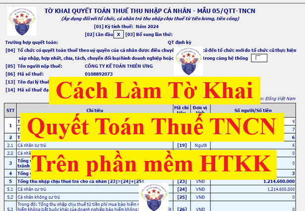
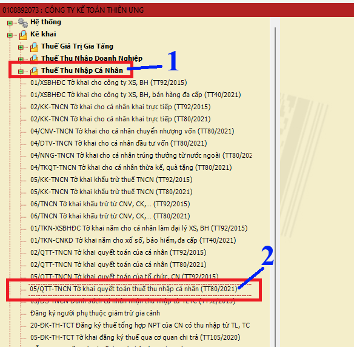
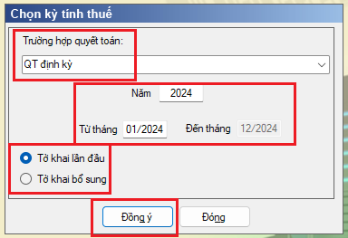
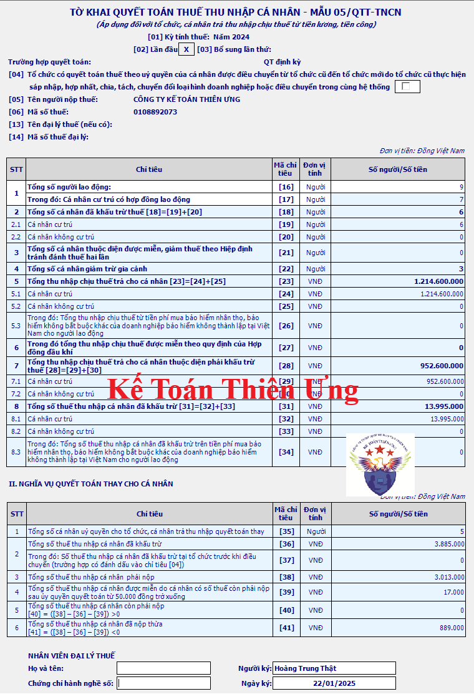
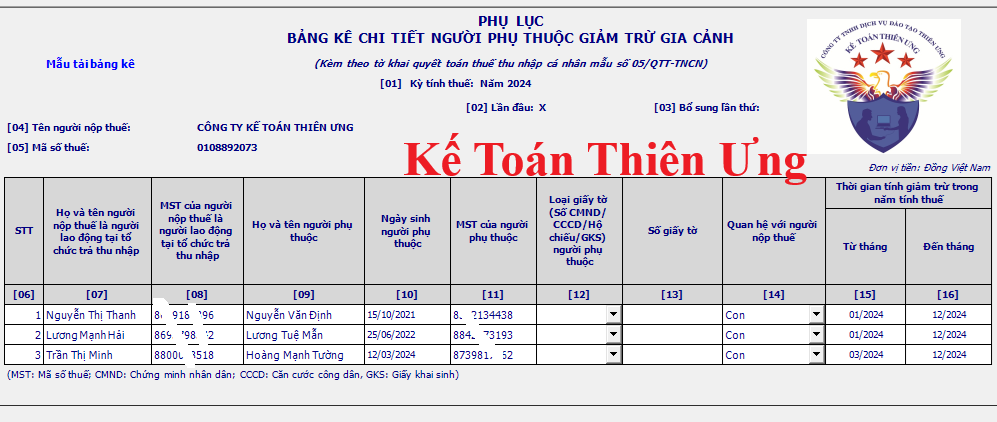
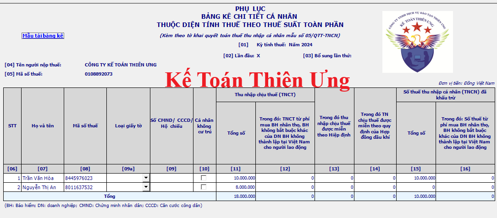
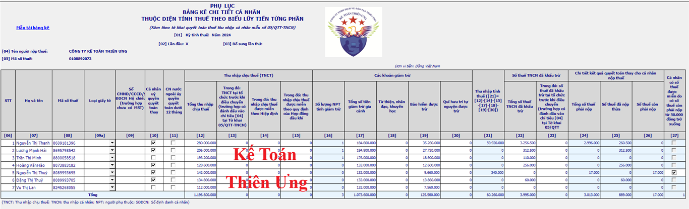

Vào đầu năm 2025 thì doanh nghiệp sẽ thực hiện làm tờ khai quyết toán thuế thu nhập cá nhân cho phần thu nhập mà doanh nghiệp đã chi trả trong năm 2024
Trong bài viết này, công ty đào tạo Kế Toán Diệu Tâm sẽ hướng dẫn các bạn cách lập tờ khai quyết toán thuế TNCN theo mẫu 05/QTT-TNCN trên phần mềm hỗ trợ kê khai
1. Tổng quan về nghĩa vụ quyết toán thuế TNCN của doanh nghiệp (cơ quan chi trả thu nhập):
Trong năm tính thuế, nếu doanh nghiệp có thực hiện chi trả thu nhập (có trả lương) thì phải làm tờ khai quyết toán thuế thu nhập cá nhân cho phần thu nhập mà DN đã chi trả, mà không cần phải phân biệt có phát sinh số thuế TNCN phải nộp hay phải khấu trừ của người lao động hay không (Cứ có trả lương là doanh nghiệp phải làm tờ khai QTT TNCN để kê khai cho phần thu nhập đã chi trả đó)
Trường hợp trong năm tính thuế, nếu doanh nghiệp không thực hiện chi trả thu nhập (không trả lương) thì không phải làm tờ khai quyết toán thuế thu nhập cá nhân 
Lưu ý:
+ Doanh nghiệp có trách nhiệm phải thực hiện quyết toán thay cho cá nhân người lao động có làm giấy ủy quyền cho doanh nghiệp quyết toán thay
+ Doanh nghiệp chỉ được quyết toán trên phần thu nhập mà Doanh nghiệp đã chi trả, Doanh nghiệp không được quyết toán phần thu nhập của NLĐ ở các đơn vị khác vào tờ khai QTT TNCN của Doanh nghiệp mình (Không phân biệt cá nhân đó có ủy quyền quyết toán thay hay không)
(Không được cộng, không được đưa thu nhập (tiền lương) của người lao động phát sinh do làm việc ở công ty khác vào tờ khai QTT TNCN của doanh nghiệp mình)
(Công ty nào chi trả bao nhiêu thì chỉ quyết toán trên số tiền mà công ty đó chi trả thôi. Còn trường hợp mà cá nhân TỰ LÀM QTT TNCN trực tiếp với cả cơ quan thuế thì mới cộng thu nhập ở tất cả các nơi vào tờ khai QTT TNCN mình)
2. Cách làm tờ khai quyết toán thuế TNCN trên phần mềm HTKK
Bước 1: Đăng nhập vào phần mềm HTKK bằng mã số thuế của doanh nghiệp
=> Nhập MST của DN muốn kê khai => Bấm vào “Đồng ý”
Bước 2: Chọn mẫu tờ khai:
=> Vào mục “Thuế thu nhập cá nhân”
=> Chọn tờ khai: “05/QTT-TNCN tờ khai quyết toán thuế thu nhập cá nhân “TT 80/2021”

Bước 3: Chọn kỳ tính thuế

Lưu ý:
+ Nếu đây là lần đầu doanh nghiệp thực hiện kê khai thuế TNCN cho kỳ tính thuế này thì sẽ tích chọn "Tờ khai lần đầu"
+ Còn sẽ tích chọn vào ô “Tờ khai bổ sung” trong trường hợp: Sau khi DN nộp tờ khai QTT TNCN lần đầu và đã nhận được Thông báo chấp nhận hồ sơ khai thuế đối với Tờ khai thuế “Lần đầu” => Sau đó, DN phát hiện ra tờ khai QTT TNCN đã nộp cho cơ quan thuế có sai, sót => DN tiến hành làm tờ khai điều chỉnh bổ sung cho tờ khai thuế QTT TNCN có sai sót đó thì sẽ thực hiện chọn trạng thái tờ khai là “Tờ khai bổ sung” theo số thứ tự của từng lần bổ sung.
=> Bấm “Đồng ý” để vào giao diện tờ khai 05/QTT-TNCN và các phụ lục: Phụ lục 05-1/BK-TNCN: Bảng kê cá nhân tính thuế theo biểu lũy tiến từng phần, Phụ lục 05-2/BK-TNCN: Bảng kê cá nhân tính thuế theo biểu toàn phần, Phụ lục 05-3/BK-TNCN: Bảng kê người phụ thuộc

-------------------------------------------------------------------------
Trình tự thực hiện làm tờ khai Quyết Toán Thuế TNCN trên phần mềm HTKK như sau:
Bước 1: Làm các phụ lục tờ khai trước
Đi kèm với tờ khai QTT TNCN mẫu 05/QTT-TNCN sẽ có 3 phụ lục:
+ Phụ lục 05-1/BK-QTT-TNCN - Bảng kê chi tiết cá nhân thuộc diện tính thuế theo biểu lũy tiến từng phần: Dùng để kê khai thu nhập của những NLĐ là cá nhân cư trú có ký HĐLĐ từ 3 tháng trở lên đã được tính thuế TNCN theo biểu lũy tiến từng phần
+ Phụ lục 05-2/BK-QTT-TNCN - Bảng kê chi tiết cá nhân thuộc diện tính thuế theo thuế suất toàn phần: Dùng để kê khai thu nhập của những NLĐ là cá nhân cư trú có ký HĐLĐ dưới 3 tháng hoặc không ký hợp đồng lao động => đã được tính thuế TNCN theo tỷ lệ 10% và các cá nhân không cư trú đã được tính thuế theo thuế suất 20%
+ Phụ lục 05-3/BK-QTT-TNCN - Bảng kê chi tiết người phụ thuộc giảm trừ gia cảnh: Dùng để kê khai những người phụ thuộc tính giảm trừ gia cảnh cho NLĐ trong năm
=> Các bạn sẽ làm các phụ lục này trước để phần mềm sẽ tự động tổng hợp thông tin lên tờ khai QTT TNCN Mẫu 05/QTT-TNCN
Bước 2: Làm tờ khai quyết toán thuế thu nhập cá nhân Mẫu 05/QTT-TNCN theo thông tư 80/2021/TT-BTC
=> Xác định tổng số người lao động tại chỉ tiêu số [16]: Là tổng số người lao động được trả thu nhập (trả lương) trong năm quyết toán
----------------------------------------------------------------------
Chi tiết từng bước làm tờ khai Quyết Toán Thuế TNCN trên phần mềm HTKK như sau:
Bước 1: Làm các phụ lục: 05-1/BK-TNCN, 05-2/BK-TNCN và Phụ lục 05-3/BK-TNCN
Có 2 cách để làm các phụ lục tờ khai QTT TNCN:
+ Cách 1: Đưa trực tiếp thông tin của người lao động vào từng bảng kê
Muốn thêm dòng: ấn phím F5 (hoặc ấn tổ hợp phím Fn+F5)
Muốn xóa dòng: ấn phím F6 (hoặc ấn tổ hợp phím Fn+F6)
+ Cách 2: Tải mẫu bảng kê Excel từ PM HTKK xuống => Rồi đưa thông tin vào bảng kê Excel => Sau đó tải bảng kê lên phần mềm
2.1. Làm phụ lục 05-3/BK-TNCN: Bảng kê người phụ thuộc

Tổng quan về phụ lục 05-3/BK-TNCN:
- Mỗi người phụ thuộc kê khai vào 1 dòng, trường hợp 1 người lao động có nhiều người phụ thuộc thì kê khai vào nhiều dòng để đảm bảo: Mỗi người phụ thuộc kê khai vào 1 dòng
- Đối tượng kê khai vào phụ lục 05-3/BK-TNCN: Là toàn bộ người phụ thuộc được tính giảm trừ cho cá nhân (NLĐ) trong năm tính thuế.
Bao gồm cả trường hợp được quy định tại mục c.2 khoản 1 Điều 9 Thông tư 111/2013/TT-BTC là:
Trường hợp người nộp thuế chưa tính giảm trừ gia cảnh cho người phụ thuộc trong năm tính thuế thì được tính giảm trừ cho người phụ thuộc kể từ tháng phát sinh nghĩa vụ nuôi dưỡng khi người nộp thuế thực hiện quyết toán thuế và có đăng ký giảm trừ gia cảnh cho người phụ thuộc.
Ví dụ: Chị Hồng sinh con vào tháng 8/2024
Tại các tháng trong năm 2024, Chị Hồng chưa đăng ký NPT nên công ty Kế Toán Diệu Tâm chưa tính giảm trừ gia cảnh cho người phụ thuộc trong năm tính thuế 2024
=> Nhưng đến thời điểm (Tháng 01/2025) khi công ty Kế Toán Diệu Tâm thực hiện làm QTT TNCN của năm 2024 thì chị Hồng có thực hiện ủy quyền quyết toán thuế và có nộp hồ sơ đăng ký NPT cho công ty Kế Toán Diệu Tâm để đăng ký NPT giảm trừ từ Tháng 08/2024 (từ thời điểm phát sinh nghĩa vụ nuôi dưỡng) => Công ty Diệu Tâm đã đăng NPT thành công cho Hồng
=> Thì khi công ty Kế Toán Diệu Tâm làm QTT TNCN năm 2024: công ty Kế Toán Diệu Tâm sẽ kê khai NPT này của chị Hồng vào mẫu phụ lục Bảng kê 05-3/BK-TNCN.
----------------------------------------------------------------------------------------
Cách kê khai từng cột chỉ tiêu trên phụ lục Bảng kê chi tiết người phụ thuộc giảm gia cảnh - Mẫu 05-3/BK-TNCN như sau:
Cột chỉ tiêu số [06] Số thứ tự: Được ghi lần lượt theo chữ số trong dãy chữ số tự nhiên (1, 2, 3….).
Phần mềm HTKK: tự động điền tăng số thứ tự khi người dùng thêm dòng.
Cột chỉ tiêu số [07] Họ và tên người nộp thuế là người lao động tại tổ chức trả thu nhập: Ghi rõ ràng, đầy đủ họ và tên của từng cá nhân đăng ký tính giảm trừ người phụ thuộc tại tổ chức, cá nhân trả thu nhập.
Phần mềm HTKK yêu cầu: cho phép người sử dụng tự nhập kiểu text, bắt buộc nhập, nhập tối đa 100 kí tự.
Cột chỉ tiêu số [08] Mã số thuế của người nộp thuế là người lao động tại tổ chức trả thu nhập: Ghi rõ ràng, đầy đủ mã số thuế của cá nhân theo Giấy chứng nhận đăng ký thuế dành cho cá nhân hoặc Thông báo mã số thuế hoặc Thẻ mã số thuế do cơ quan thuế cấp.
Phần mềm HTKK yêu cầu: Bắt buộc nhập tối đa 10 ký tự, kiểm tra đúng cấu trúc mã số thuế
Cột chỉ tiêu số [09] Họ và tên người phụ thuộc: Ghi rõ ràng, đầy đủ tên người phụ thuộc của cá nhân theo tờ đăng ký mã số thuế hoặc chứng minh nhân dân/căn cước công dân/hộ chiếu/GKS.
Phần mềm HTKK yêu cầu: cho phép người sử dụng tự nhập kiểu text, bắt buộc nhập, nhập tối đa 100 kí tự.
Cột chỉ tiêu số [10] Ngày sinh của người phụ thuộc: Ghi rõ ràng, đầy đủ ngày, tháng, năm sinh của người phụ thuộc.
Phần mềm HTKK yêu cầu: Người sử dụng nhập kiểu dd/mm/yyyy. Kiểm tra ngày sinh không được lớn hơn ngày hiện tại và phải nhỏ hơn hoặc bằng từ tháng giảm trừ
Cột chỉ tiêu số [11] Mã số thuế của người phụ thuộc: Ghi rõ ràng, đầy đủ mã số thuế của người phụ thuộc như trên Giấy chứng nhận đăng ký thuế hoặc Thông báo mã số thuế hoặc Thẻ mã số thuế do cơ quan thuế cấp.
Phần mềm HTKK yêu cầu: Nhập tối đa 10 ký tự, kiểm tra đúng cấu trúc mã số thuế và không được trùng với MST của người nộp thuế, nếu không thỏa mãn ứng dụng đưa ra cảnh báo vàng
+ Nếu nhập chỉ tiêu [11] MST của người phụ thuộc thì không bắt buộc nhập chỉ tiêu [12] “Loại giấy tờ” và chỉ tiêu [13] “Số giấy tờ”
+ Nếu để trống chỉ tiêu [11] MST của người phụ thuộc thì bắt buộc nhập chỉ tiêu [12] “Loại giấy tờ” và chỉ tiêu [13] “Số giấy tờ”
Cột chỉ tiêu: Người nước ngoài hoặc người Việt Nam sống ở nước ngoài không có mã định danh: Cho phép tích chọn
Lưu ý:
+ Nếu không tích “Người nước ngoài hoặc người Việt Nam sống ở nước ngoài không có mã định danh”: Nếu chọn “Loại giấy tờ” thì phải là “Thẻ CCCD/số định danh cá nhân”
+ Nếu tích “Người nước ngoài hoặc người Việt Nam sống ở nước ngoài không có mã định danh”: Nếu chọn “Loại giấy tờ” thì phải là là “Hộ chiếu”
Cột chỉ tiêu số [12] Loại giấy tờ (số CMND/CCCD/ Hộ chiếu/GKS) người phụ thuộc: Ghi loại giấy tờ chứng minh thông tin của người phụ thuộc theo từng người phụ thuộc: CMND/CCCD/Hộ chiếu/GKS.
Phần mềm HTKK yêu cầu: Bắt buộc nhập nếu không có MST, chọn trong danh mục gồm “Thẻ CCCD/số định danh cá nhân, Hộ chiếu”
(Nếu người phụ thuộc đã có mã số thuế tại cột số 11 thì không bắt buộc phải nhập cột số 12)
Cột chỉ tiêu số [13] Số giấy tờ: Ghi rõ ràng, đầy đủ số CMND/CCCD/Hộ chiếu/GKS theo từng người phụ thuộc.
Phần mềm HTKK yêu cầu: Bắt buộc nhập nếu không có MST (Nếu người phụ thuộc đã có mã số thuế tại cột số 11 thì không bắt buộc phải nhập cột số 13)
Cột chỉ tiêu số [14] Quan hệ với người nộp thuế: Ghi rõ ràng mối quan hệ của người phụ thuộc với người nộp thuế.
Phần mềm HTKK yêu cầu: Bắt buộc nhập, Cho phép người sử dụng chọn trong danh mục
Cột chỉ tiêu số [15] Từ tháng: Là thời điểm bắt đầu tính giảm trừ người phụ thuộc trong năm tính thuế theo thực tế phát sinh.
Trường hợp cá nhân chưa tính giảm trừ gia cảnh cho người phụ thuộc trong năm tính thuế theo đúng thực tế phát sinh thì được tính giảm trừ cho người phụ thuộc kể từ tháng thực tế phát sinh nghĩa vụ nuôi dưỡng khi cá nhân thực hiện quyết toán thuế và đã có đăng ký giảm trừ gia cảnh cho người phụ thuộc theo thực tế phát sinh nghĩa vụ nuôi dưỡng.
Trường hợp trong năm cá nhân đã thực hiện đăng ký giảm trừ gia cảnh cho người phụ thuộc nhưng đến cuối năm có yêu cầu điều chỉnh lại theo thực tế phát sinh thì thực hiện khai bổ sung Bản đăng ký người phụ thuộc.
Phần mềm HTKK yêu cầu: nhập dạng MM/YYYY, phải thuộc khoảng thời gian quyết toán
Cột chỉ tiêu số [16] Đến tháng: Là thời điểm kết thúc tính giảm trừ người phụ thuộc trong năm tính thuế theo thực tế phát sinh.
Phần mềm HTKK yêu cầu: nhập dạng MM/YYYY, phải thuộc khoảng thời gian quyết toán, kiểm tra Đến tháng >= Từ tháng
Lưu ý: Thời gian kê khai ở 2 cột chỉ tiêu số 15 (từ tháng) và cột chỉ tiêu số 16 (đến tháng): phải thuộc vào trong khoảng thời gian quyết toán
Ví dụ: Khi doanh nghiệp làm tờ khai quyết toán thuế TNCN cho năm 2024
Thì thời gian kê khai vào cột chỉ tiêu số 15 và 16 này phải thuộc trong khoảng thời gian từ tháng 01/2024 đến tháng 12/2024 (Nếu đưa các năm không phải là năm 2024 thì phần mềm sẽ báo lỗi)
2.2. Làm phụ lục 05-2/BK-TNCN: Phụ lục bảng kê chi tiết cá nhân thuộc diện tính thuế theo thuế suất toàn phần

Đối tượng kê khai vào phụ lục 05-2/BK-TNCN: Phụ lục bảng kê chi tiết cá nhân thuộc diện tính thuế theo thuế suất toàn phần
- Đối tượng kê khai: bao gồm 2 đối tượng
+ Những người lao động đã được tính thuế TNCN theo tỷ lệ 10%: là các cá nhân cư trú ký HĐLĐ dưới 3 tháng hoặc không ký HĐLĐ (mà ký các loại hợp đồng như khoán việc, thử việc, dịch vụ, đào tạo, học nghề, thực tập…)
+ Những người lao động đã được tính thuế TNCN theo thuế suất 20%: là các cá nhân không cư trú
- Lưu ý: Không phân biệt cá nhân đó có bị khấu trừ thuế TNCN hay không hoặc có phát sinh số thuế TNCN phải nộp hay không, đã nghỉ hay chưa (cứ được trả lương là phải đưa thông tin, thu nhập vào tờ khai QTT TNCN tại phụ lục tương ứng)
- Thu nhập kê khai: là thu nhập đã chi trả trong khoảng thời gian từ ngày 01/01 đến hết ngày 31/12 của năm quyết toán
Ví dụ: Khi tờ khai QTT TNCN cho năm 2024, thì sẽ kê khai những người lao động được trả thu nhập (trả lương) từ ngày 01/01/2024 đến hết ngày 31/12/2024 (Thu nhập (lương) chi trả ngoài khoảng thời gian này thì không đưa vào tờ khai QTT TNCN của năm 2024)
Cách kê khai từng cột chỉ tiêu trên Phụ lục bảng kê chi tiết cá nhân thuộc diện tính thuế theo thuế suất toàn phần - Mẫu 05-2/BK-TNCN như sau:
Cột chỉ tiêu số [06] Số thứ tự: Được ghi lần lượt theo chữ số trong dãy chữ số tự nhiên (1, 2, 3….).
Phần mềm HTKK: tự tăng khi thêm dòng
Cột chỉ tiêu số [07] Họ và tên: Ghi rõ ràng, đầy đủ họ và tên của cá nhân cư trú không ký hợp đồng lao động hoặc có hợp đồng lao động dưới 3 tháng hoặc cá nhân không cư trú được tổ chức, cá nhân trả thu nhập, kể cả các cá nhân có thu nhập chưa đến mức khấu trừ thuế; hoặc cá nhân (bao gồm cả cá nhân có hợp đồng lao động và cá nhân không ký hợp đồng lao động) được tổ chức, cá nhân trả thu nhập mua bảo hiểm nhân thọ, bảo hiểm không bắt buộc khác có tích lũy về phí bảo hiểm của doanh nghiệp bảo hiểm không thành lập tại Việt Nam trong kỳ.
Phần mềm HTKK: Cho phép nhập
Cột chỉ tiêu số [08] Mã số thuế: Ghi rõ ràng, đầy đủ mã số thuế của cá nhân theo Giấy chứng nhận đăng ký thuế dành cho cá nhân hoặc Thông báo mã số thuế hoặc Thẻ mã số thuế do cơ quan thuế cấp.
Phần mềm HTKK yêu cầu: Bắt buộc nhập nếu có đánh dấu ở [10] hoặc [11]
Cột chỉ tiêu số [09] Số CMND/Hộ chiếu (trường hợp chưa có MST): Trường hợp cá nhân chưa đủ điều kiện để được cấp MST thì ghi số chứng minh nhân dân hoặc hộ chiếu.
Phần mềm HTKK yêu cầu:
+ Chỉ tiêu [09a]: Bắt buộc nhập nếu không có [08], Cho phép lựa chọn 1 trong các loại giấy tờ: CMND/CCCD/ Hộ chiếu/ Khác
+ Chỉ tiêu [09]: Bắt buộc nhập nếu không có [08]
Cột chỉ tiêu số [10] Cá nhân không cư trú: Nếu là cá nhân không cư trú thì đánh dấu “x” vào chỉ tiêu này.
Phần mềm HTKK yêu cầu: Cho phép người dùng tích chọn
Cột chỉ tiêu số [11] Tổng số TNCT: Là tổng các khoản thu nhập chịu thuế từ tiền lương, tiền công đã trả trong kỳ cho cá nhân cư trú không ký hợp đồng lao động hoặc có hợp đồng lao động dưới 03 tháng và cá nhân không cư trú trong kỳ, kể cả các khoản tiền lương, tiền công nhận được do được miễn, giảm thuế theo Hiệp định tránh đánh thuế 2 lần và theo quy định của Hợp đồng dầu khí; và các khoản phí mà tổ chức, cá nhân trả thu nhập mua bảo hiểm nhân thọ, bảo hiểm không bắt buộc khác của doanh nghiệp bảo hiểm không thành lập tại Việt Nam cho người lao động.
Phần mềm HTKK yêu cầu: nhập số, không âm, mặc định là 0, tối đa 16 chữ số
Cột chỉ tiêu số [12] TNCT từ phí mua bảo hiểm nhân thọ, bảo hiểm không bắt buộc khác của doanh nghiệp bảo hiểm không thành lập tại Việt Nam cho người lao động: Là khoản tiền mà tổ chức, cá nhân trả thu nhập mua bảo hiểm nhân thọ, bảo hiểm không bắt buộc khác có tích lũy về phí bảo hiểm của doanh nghiệp bảo hiểm không thành lập tại Việt Nam cho người lao động, tổng TNCT tại chi tiêu [12] < tổng TNCT tại chi tiêu [11] trên Phụ lục Mẫu số 05-2/BK-QTT-TNCN.
Phần mềm HTKK yêu cầu: nhập số, không âm, mặc định là 0, tối đa 16 chữ số, <= [11]
Cột chỉ tiêu số [13] TNCT được miễn theo Hiệp định: Là các khoản thu nhập chịu thuế làm căn cứ được miễn, giảm thuế theo Hiệp định tránh đánh thuế hai lần.
Phần mềm HTKK yêu cầu: nhập số, không âm, mặc định là 0, tối đa 16 chữ số, <= [11]
Cột chỉ tiêu số [14] TNCT được miễn theo quy định của Hợp đồng dầu khí: Là các khoản thu nhập chịu thuế được miễn theo quy định của Hợp đồng dầu khí (nếu có phát sinh).
Phần mềm HTKK yêu cầu: nhập số, không âm, mặc định là 0, tối đa 16 chữ số, <= [11]
Cột chỉ tiêu số [15] Tổng số thuế TNCN đã khấu trừ: Là tổng số thuế TNCN mà tổ chức, cá nhân trả thu nhập đã khấu trừ của từng cá nhân trong kỳ.
Phần mềm HTKK yêu cầu: nhập số, không âm, mặc định là 0, tối đa 13 chữ số
Cột chỉ tiêu số [16] Số thuế từ phí mua bảo hiểm nhân thọ, bảo hiểm không bắt buộc khác của doanh nghiệp bảo hiểm không thành lập tại Việt Nam cho người lao động: Là số thuế thu nhập cá nhân mà tổ chức, cá nhân trả thu nhập đã khấu trừ trên khoản tiền phí mua bảo hiểm nhân thọ, bảo hiểm không bắt buộc khác có tích lũy về phí bảo hiểm của doanh nghiệp bảo hiểm không thành lập tại Việt Nam cho người lao động. Tổng số thuế tại chi tiêu [16] < tổng số thuế tại chi tiêu [15] và bằng chỉ tiêu [12] nhân (x) 10% trên Phụ lục mẫu số 05-2/BK-QTT-TNCN.
Phần mềm HTKK tự động tính toán: chi tiêu [16] = [12] * 10%, cho phép sửa kiểu số >=0 và kiểm tra <= [15]
2.3. Làm phụ lục 05-1/BK-TNCN: Phụ lục bảng kê chi tiết cá nhân thuộc diện tính thuế theo biểu luỹ tiến từng phần

- Đối tượng kê khai: Các cá nhân cư trú có ký HĐLĐ từ 3 tháng trở lên đã tính thuế TNCN theo biểu lũy tiến từng phần (Không phân biệt có bị khấu trừ thuế TNCN hay không, đã nghỉ hay chưa)
- Thu nhập kê khai: Tổng hợp thu nhập mà cá nhân được chi trả từ ngày 01/01 đến hết ngày 31/12 của năm tính thuế
Ví dụ: Khi tờ khai QTT TNCN cho năm 2024, thì sẽ kê khai những người lao động được trả thu nhập (trả lương) từ ngày 01/01/2024 đến hết ngày 31/12/2024 (Thu nhập (lương) chi trả ngoài khoảng thời gian này thì không đưa vào tờ khai QTT TNCN của năm 2024)
Cách kê khai từng cột chỉ tiêu trên Phụ lục bảng kê chi tiết cá nhân thuộc diện tính thuế theo biểu luỹ tiến từng phần - Mẫu 05-1/BK-TNCN như sau:
Cột chỉ tiêu số [06] Số thứ tự: Được ghi lần lượt theo chữ số trong dãy chữ số tự nhiên (1, 2, 3….).
Phần mềm HTKK: tự động tăng khi thêm dòng
Cột chỉ tiêu số [07] Họ và tên: Ghi rõ ràng, đầy đủ họ và tên của cá nhân cư trú nhận thu nhập từ tiền lương, tiền công có ký hợp đồng lao động từ 03 tháng trở lên, kể cả cá nhân nhận thu nhập chưa đến mức khấu trừ thuế hoặc cá nhân đã thôi việc tính đến thời điểm lập tờ khai theo tờ đăng ký mã số thuế hoặc chứng minh nhân dân/căn cước công dân/hộ chiếu của cá nhân.
Phần mềm HTKK yêu cầu: tự nhập
Cột chỉ tiêu số [08] Mã số thuế: Ghi rõ ràng, đầy đủ mã số thuế của cá nhân theo Giấy chứng nhận đăng ký thuế dành cho cá nhân hoặc Thông báo mã số thuế hoặc Thẻ mã số thuế do cơ quan thuế cấp.
Phần mềm HTKK yêu cầu: Bắt buộc nhập nếu có đánh dấu ở [10] hoặc [11]
Cột chỉ tiêu số [09] Số CMND/Hộ chiếu (trường hợp chưa có MST): Trường hợp cá nhân chưa đủ điều kiện để được cấp MST thì ghi số chứng minh nhân dân hoặc hộ chiếu.
Phần mềm HTKK yêu cầu: Bắt buộc nhập nếu không có [08]
Cột chỉ tiêu số [10] Cá nhân ủy quyền quyết toán thay: Cá nhân đủ điều kiện được ủy quyền cho tổ chức, cá nhân trả thu nhập quyết toán thuế thay thì đánh dấu “x” vào chỉ tiêu này.
Phần mềm HTKK: Cho phép tích chọn
Chi tiết về các trường hợp được ủy quyền các bạn xem tại đây nhé:
Cột chỉ tiêu số [11] Cá nhân nước ngoài ủy quyền quyết toán dưới 12 tháng: Cá nhân người nước ngoài đủ điều kiện được ủy quyền cho tổ chức, cá nhân trả thu nhập quyết toán thuế dưới 12 tháng thì đánh dấu “x” vào chỉ tiêu này.
Phần mềm HTKK: Cho phép tích chọn
Cột chỉ tiêu số [12] Tổng thu nhập chịu thuế: Là tổng các khoản thu nhập chịu thuế từ tiền lương, tiền công đã trả trong kỳ cho cá nhân cư trú có ký hợp đồng lao động từ 03 tháng trở lên, bao gồm TNCT tại tổ chức trước khi điều chuyển, các khoản tiền lương, tiền công nhận được do được miễn, giảm thuế theo Hiệp định tránh đánh thuế hai lần và theo quy định của Hợp đồng dầu khí.
Phần mềm HTKK yêu cầu: nhập số, không âm, <= [12], Cho phép nhập giá trị <> 0 nếu có dánh dấu chỉ tiêu [04] tại Tờ khai
Cách tính Thu nhập chịu thuế:
|
Thu nhập chịu thuế |
= |
Tổng thu nhập |
- |
Các khoản được miễn thuế |
Chi tiết về cách xác định tổng thu nhập và các khoản thu nhập được miễn thuế thì các bạn vui lòng xem tại đây nhé:
-----------------------------------------------------------------------------
Cột chỉ tiêu số [13] Trong đó TNCT tại tổ chức trước khi điều chuyển (trường hợp có đánh dấu vào chỉ tiêu [04] tại Tờ khai 05/QTT-TNCN): Là các khoản thu nhập chịu thuế tại tổ chức trước khi điều chuyển.
Phần mềm HTKK yêu cầu: nhập số, không âm, <= [12], Cho phép nhập giá trị <> 0 nếu có dánh dấu chỉ tiêu [04] tại Tờ khai
Cột chỉ tiêu số [14] Trong đó: TNCT được miễn theo Hiệp định: Là các khoản thu nhập chịu thuế làm căn cứ xét miễn, giảm thuế theo Hiệp định tránh đánh thuế hai lần.
Phần mềm HTKK yêu cầu: nhập số, không âm, mặc định là 0, tối đa 16 số, <=[12]
Cột chỉ tiêu số [15] Trong đó: TNCT được miễn theo quy định của Hợp đồng dầu khí: Là các khoản thu nhập chịu thuế được miễn theo quy định của Hợp đồng dầu khí (nếu có phát sinh)
Phần mềm HTKK yêu cầu: nhập số, không âm, mặc định là 0, tối đa 16 số, <=[12]
Cột chỉ tiêu số [16] Số lượng NPT tính giảm trừ: Là tổng số người phụ thuộc được tính giảm trừ gia cảnh cho cá nhân đã đăng ký giảm trừ gia cảnh theo quy định, chỉ tiêu [16] bằng tổng số người phụ thuộc được kê khai trên Phụ lục mẫu số 05-3/BK-QTT-TNCN.
Phần mềm HTKK yêu cầu: nhập số, không âm, Đếm số lượng NPT ở Bảng kê 05-3 theo từng MST
Cột chỉ tiêu số [17] Tổng số tiền giảm trừ gia cảnh: Là các khoản giảm trừ cho bản thân người nộp thuế và các khoản giảm trừ cho người phụ thuộc theo quy định của kỷ tính thuế.
Phần mềm HTKK yêu cầu: Mặc định = số giảm trừ bản thân + giảm trừ NPT, cho phép sửa nhưng không > số phần mềm đã tính mặc định
Cách xác định số tiền giảm trừ gia cảnh như sau:
* Giảm trừ bản thân:
+ Mức giảm: 11 triệu/người/tháng (giảm đủ 12 tháng là 132 triệu đồng/năm).
+ Trường hợp trong kỳ tính thuế cá nhân cư trú chưa tính giảm trừ gia cảnh cho bản thân hoặc tính giảm trừ gia cảnh cho bản thân chưa đủ 12 tháng thì được tính đủ 12 tháng nếu thực hiện quyết toán thuế theo quy định.
(Theo tiết c.1.3, điểm c, khoản 1, điều 9 của Thông tư 111/2013/TT-BTC)
+ Số tiền giảm trừ bản thân của NLĐ khi làm QTT TNCN như sau:
+/ Trường hợp 1: Nếu NLĐ có làm giấy Ủy quyền quyết toán thay thì được tính giảm trừ bản thân đủ 12 tháng là 132 triệu (=11.000.000đ/tháng x 12 tháng)
+/ Trường hợp 2: Nếu không làm giấy ủy quyền quyết toán thay (do không đủ điều kiện UQ hoặc đủ điều kiện nhưng không làm giấy UQ) thì trong năm đã giảm trừ bao nhiêu tháng thì khi quyết toán được tính giảm trừ bản thân bấy nhiêu tháng (Lấy theo đúng số đã tính ở các tháng trong năm)
* Giảm trừ người phụ thuộc:
+ Mức giảm: 4.400.000đ/người/tháng (giảm đủ 12 tháng trong năm là 52,8tr)
+ Số tiền giảm trừ NPT của NLĐ khi làm QTT TNCN như sau:
+/ Trường hợp 1: Nếu NLĐ có làm giấy Ủy quyền quyết toán thay thì được tính giảm trừ NPT 12 tháng là 52,8 triệu đồng hoặc từ khi phát sinh nghĩa vụ nuôi dưỡng
(Lưu ý: Trường hợp trong năm phát sinh nghĩa vụ nuôi dưỡng không đủ 12 tháng (Ví dụ như sinh con từ tháng 7/2024) thì tính giảm trừ từ tháng phát sinh nghĩa vụ nuôi dưỡng (tháng 7/2024 = 6 tháng)
+/ Trường hợp 2: Nếu không làm giấy ủy quyền quyết toán thay (do không đủ điều kiện UQ hoặc đủ điều kiện nhưng không làm giấy UQ) thì trong năm đã giảm trừ bao nhiêu tháng thì khi quyết toán được tính giảm trừ bấy nhiêu tháng (Lấy theo đúng số đã tính ở các tháng trong năm)
Cột chỉ tiêu số [18] Từ thiện, nhân đạo, khuyến học: Là các khoản chi đóng góp từ thiện, nhân đạo, khuyến học của kỳ tính thuế.
Phần mềm HTKK yêu cầu: nhập số, không âm, mặc định là 0, tối đa 16 số
Cột chỉ tiêu số [19] Bảo hiểm được trừ: Là các khoản đóng góp bảo hiểm gồm: bảo hiểm xã hội, bảo hiểm y tế, bảo hiểm thất nghiệp, bảo hiểm trách nhiệm nghề nghiệp đối với một số ngành nghề phải tham gia bảo hiểm bắt buộc của kỳ tính thuế (trường hợp người lao động được điều chuyển trong cùng hệ thống và ủy quyền cho tổ chức mới quyết toán thay thì bao gồm cả khoản bảo hiểm được trừ (nếu có) của người lao động tại tổ chức cũ).
Cụ thể: BHXH: 8%, BHYT: 1,5%, BHTN: 1% => Tổng là 10,5%
Lưu ý: Đây là phần trích vào lương của người lao động nhé.
Ví dụ: Nhân viên A làm từ tháng 1 - tháng 12 với mức lương tham gia BHXH là 5.000.000
- > Như vậy hàng tháng Công ty trích BH trừ vào lương của nhân viên A là: = 5tr x 10,5% = 525.000/tháng
=> Như vậy: Số tiền nhập vào chỉ tiêu [19] cho dòng của nhân viên A = 525.000 x 12 tháng = 6.300.000
------------------------------------------------------------------------------------------------
Phần mềm HTKK yêu cầu chỉ tiêu 19: nhập số, không âm, mặc định là 0, tối đa 16 số
Cột chỉ tiêu số [20] Quỹ hưu trí tự nguyện được trừ: Là tổng các khoản đóng vào Quỹ hưu trí tự nguyện theo thực tế phát sinh nhưng tối đa không quá một (01) triệu đồng/tháng (12 triệu đồng/năm) của kỳ tính thuế.
Phần mềm HTKK yêu cầu: nhập số, không âm, mặc định là 0, tối đa 16 số, <=12.000.000
Cột chỉ tiêu số [21] Thu nhập tính thuế: Chỉ tiêu [21] = [12] - [14] - [15] - [17] - [18] - [19]- [20]
Phần mềm HTKK tự động tính theo công thức: ([21]= [12]-[14]-[15]-[17] –[18] –[19]-[20]), nếu [21] < 0 thì hiển thị =0, không cho sửa
Cột chỉ tiêu số [22] Số thuế TNCN đã khấu trừ: Là số thuế TNCN mà tổ chức, cá nhân trả thu nhập đã khấu trừ của cá nhân cư trú có hợp đồng lao động từ 03 tháng trở lên trong kỳ. Trường hợp người lao động được điều chuyển trong cùng hệ thống và ủy quyền cho tổ chức mới quyết toán thay thì bao gồm cả số thuế TNCN đã khấu trừ (nếu có) của người lao động tại tổ chức cũ)
Phần mềm HTKK yêu cầu: nhập số, không âm, mặc định là 0, tối đa 13 số
Cột chỉ tiêu số [23] Trong đó: Số thuế đã khấu trừ tại tổ chức trước khi điều chuyển (trường hợp có đánh dấu vào chỉ tiêu [04] tại Tờ khai 05/QTT-TNCN): Là số thuế đã khấu trừ tại tổ chức trước khi điều chuyển.
Phần mềm HTKK yêu cầu: nhập số, không âm, <= [22], Cho phép nhập giá trị <> 0 nếu có dánh dấu chỉ tiêu [04] tại Tờ khai
Cột chỉ tiêu số [24] Tổng số thuế phải nộp: Là tổng số thuế phải nộp của cá nhân uỷ quyền cho tổ chức, cá nhân trả thu nhập quyết toán thuế thay. Chỉ tiêu [24] = [21] x thuế suất biểu thuế lũy tiến theo kỳ tính thuế.
Phần mềm HTKK yêu cầu: Chỉ tiêu [24]:
+ Tích ct [10]: UD tính theo biểu lũy tiến của số tháng quyết toán của DN, không sửa Nhập kiểu số
+ Tích ct [11]: UD tính theo biểu lũy tiến của số tháng quyết toán của DN, cho sửa
Cột chỉ tiêu số [25] Số thuế đã nộp thừa: Là số thuế đã nộp thừa của cá nhân uỷ quyền cho tổ chức, cá nhân trả thu nhập quyết toán thuế thay. Chỉ tiêu [25] = [22] + [23]- [24] > 0.
Phần mềm HTKK yêu cầu: Chỉ tiêu [25]:
+ Nếu tích 10 UD tính theo công thức: [25] = trị tuyệt đối ([24] – [22]) nếu ([24] – [22]) < 0, không cho sửa
+ Nếu tích [11] UD tính theo công thức: 25] = trị tuyệt đối ([24] – [22]) nếu ([24] – [22]) < 0, cho sửa
Cột chỉ tiêu số [26] Số thuế còn phải nộp: Là số thuế còn phải nộp của cá nhân uỷ quyền cho tổ chức, cá nhân trả thu nhập quyết toán thuế thay. Chỉ tiêu [26] = [24] - [22]- [23] > 0.
Phần mềm HTKK tự động tính theo công thức: [26] = [24] – [22] > 0
Cột chỉ tiêu số [27] Tổng số cá nhân có số thuế được miễn do có số thuế còn phải nộp từ 50.000 đồng trở xuống: cá nhân có số thuế được miễn do có số thuế còn phải nộp từ 50.000 đồng trở xuống thì đánh dấu “x” vào chỉ tiêu này.
Phần mềm HTKK yêu cầu: Nếu chọn thì [26] phải <50.000
2.4. Lưu ý: Đối với lao động thử việc đạt yêu cầu => Sau đó ký hợp đồng lao động dài hạn
Đối với trường hợp: Người lao động có 2 loại hợp đồng trở lên trong cùng 1 năm tại 1 công ty
Tức là:
+ Vừa có thu nhập từ việc ký hợp đồng thử việc: đã được tính thuế theo tỷ lệ 10%
+ Vừa có thu nhập từ việc ký loại hợp đồng là HĐLĐ có thời hạn từ 3 tháng trở lên: được tính thuế theo biểu lũy tiến từng phần)
Thì thực hiện kê khai lên các bảng kê 05-1 và 05-2 như sau:
- Trường Hợp 1: Nếu cá nhân đó không làm ủy quyền quyết toán thay (do không đủ điều kiện hoặc đủ điều kiện nhưng không làm) thì:
+ Phần thu nhập nhận được từ hợp đồng thử việc đã tính thuế theo tỷ lệ 10%: sẽ kê khai lên bảng kê phụ lục 05-2/BK-TNCN
+ Phần thu nhập nhận được từ loại HĐLĐ từ 3 tháng trở lên đã tính thuế theo biểu lũy tiến từng phần: sẽ kê khai lên bảng kê phụ lục 05-1/BK-TNCN
- Trường Hợp 2: Nếu cá nhân có làm ủy quyền quyết toán thay (khi đủ điều kiện) thì: Tất cả thu nhập của NLĐ đó (bao gồm cả thu nhập nhận được từ hợp đồng thử việc và phần thu nhập nhận được từ HĐLĐ từ 3 tháng trở lên): Đều kê khai lên bảng kê phụ lục 05-1/BK-TNCN
Bước 2: Làm tờ khai quyết toán thuế TNCN mẫu 05/QTT-TNCN
Cột chỉ tiêu số [16] Tổng số người lao động: Là tổng số cá nhân nhận thu nhập từ tiền lương tiền công tại tổ chức, cá nhân trả thu nhập trong kỳ.
Chỉ tiêu số 16 = Tổng số người ở Phụ Lục 05-1/BK-TNCN + Tổng số người ở Phụ Lục 05-2/BK-TNCN – Tổng số người khai trùng ở cả 2 phụ lục
Trong đó, Tổng số người khai trùng ở cả 2 phụ lục là những NLĐ có 2 loại hợp đồng trong 1 năm mà không làm ủy quyền quyết toán thay (do không đủ điều kiện hoặc đủ điều kiện nhưng không làm) nên đã đưa thông tin vào cả 2 phụ lục 05-1 và 05-2
+ Phần mềm HTKK yêu cầu: nhập dạng số, không âm, mặc định là 0, tối đa 13 số
Cột chỉ tiêu số [17] Cá nhân cư trú có hợp đồng lao động: Là tổng số cá nhân cư trú nhận thu nhập từ tiền lương tiền công theo hợp đồng lao động từ 03 tháng trở lên tại tổ chức, cá nhân trả thu nhập trong kỳ. Chỉ tiêu [17] bằng số lượng cá nhân được kê khai tại Phụ lục mẫu số 05-1/BK-QTT-TNCN.
Phần mềm HTKK tự động hiển thị [17] = Tổng số lượng cá nhân trên BK 05-1 (tổng số dòng trên 05-1), cho phép sửa, kiểm tra [17] <= [16]
Cột chỉ tiêu số [18] Tổng số cá nhân đã khấu trừ thuế: Chỉ tiêu [18] = [19] + [20].
Phần mềm HTKK tự động tính theo công thức: [18]=[19]+[20], không cho sửa
Cột chỉ tiêu số [19] Cá nhân cư trú: Là tổng số cá nhân cư trú mà tổ chức, cá nhân trả thu nhập đã khấu trừ thuế trong kỳ. Chỉ tiêu [19] bằng tổng số lượng cá nhân đã kê khai khấu trừ (chỉ tiêu [22]>0) tại Phụ lục mẫu số 05-1/BK-QTT-TNCN và tổng số lượng cá nhân cư trú đã kê khai khấu trừ (chỉ tiêu [10] bỏ trống và chỉ tiêu [15] >0) tại Phụ lục mẫu số 05-2/BK-QTT-TNCN.
Phần mềm HTKK tự động tính theo công thức: [19] = Tổng số lượng cá nhân trên BK 05-1 có [22] >0 + Tổng số lượng cá nhân trên BK 05-2 có [15] >0 không đánh dấu ở [10], cho phép sửa
Cột chỉ tiêu số [20] Cá nhân không cư trú: Là tổng số cá nhân không cư trú mà tổ chức, cá nhân trả thu nhập đã khấu trừ thuế trong kỳ. Chỉ tiêu [20] bằng tổng số lượng cá nhân không cư trú đã kê khai khấu trừ (chỉ tiêu [10] có đánh dấu “x” và chỉ tiêu [15] >0) tại Phụ lục mẫu số 05-2/BK-QTT-TNCN.
Phần mềm HTKK tự động tính theo công thức: [20] = Tổng số lượng cá nhân trên BK 05-2 có [15] >0 có đánh dấu ở [10], không cho sửa
Cột chỉ tiêu số [21] Tổng số cá nhân thuộc diện được miễn, giảm thuế theo Hiệp định tránh đánh thuế hai lần: Là tổng số cá nhân có thu nhập chịu thuế được miễn, giảm thuế TNCN theo Hiệp định tránh đánh thuế hai lần. Chỉ tiêu [21] bằng tổng số lượng cá nhân đã kê khai có chỉ tiêu [14] > 0 tại Phụ lục mẫu số 05-1/BK-QTT-TNCN và tổng số lượng cá nhân đã kê khai có chỉ tiêu [13] > 0 tại Phụ lục mẫu số 05-2/BK-QTT-TNCN.
Phần mềm HTKK tự động tính theo công thức: [21] = Tổng số lượng cá nhân trên BK 05-1 có [14] >0 + Tổng số lượng cá nhân trên BK 05-2 có [13] >0, kiểm tra [21] <= [18]
Cột chỉ tiêu số [22] Tổng số cá nhân giảm trừ gia cảnh: Là tổng số người phụ thuộc được tính giảm trừ gia cảnh cho cá nhân đã đăng ký giảm trừ gia cảnh theo quy định. Chỉ tiêu [22] bằng tổng số lượng người phụ thuộc trên chỉ tiêu [16] Phụ lục mẫu số 05-1/BK-QTT-TNCN.
Phần mềm HTKK tự động tính theo công thức: [22] = Tổng cột [16] trên BK 05-1, không cho sửa
Cột chỉ tiêu số [23] Tổng thu nhập chịu thuế (TNCT) trả cho cá nhân: Chỉ tiêu [23] = [24] + [25].
Phần mềm HTKK tự động tính theo công thức: [23]=[24]+[25], không cho sửa
Cột chỉ tiêu số [24] Cá nhân cư trú: Chỉ tiêu [24] bằng tổng TNCT tại chỉ tiêu [12] trừ (-) tổng TNCT tại tổ chức trước khi điều chuyển đã khai tại chỉ tiêu [13] trên Phụ lục mẫu số 05-1/BK-QTT-TNCN và tổng TNCT đã khai tại chỉ tiêu [11] ứng với chỉ tiêu [10] bỏ trống trên Phụ lục mẫu số 05-2/BK-QTT-TNCN.
Phần mềm HTKK tự động tính theo công thức: [24] = Tổng cột ([12] – [13] trên BK 05-1 + Tổng cột ([11]) trên BK 05-2 không đánh dấu ở [10], không cho sửa Tài liệu hướng dẫn sử dụng_Ứng dụng Hỗ trợ kê khai
Cột chỉ tiêu số [25] Cá nhân không cư trú: Chỉ tiêu [25] bằng tổng TNCT tại chỉ tiêu [11] ứng với chỉ tiêu [10] có đánh dấu “x” trên Phụ lục mẫu số 05-2/BK-QTT-TNCN.
Phần mềm HTKK tự động tính theo công thức: [25] = Tổng cột ([11]) trên BK 05-2 có đánh dấu ở [10], không cho sửa
Cột chỉ tiêu số [26] Tổng thu nhập chịu thuế từ tiền phí mua bảo hiểm nhân thọ, bảo hiểm không bắt buộc khác của doanh nghiệp bảo hiểm không thành lập tại Việt Nam cho người lao động: Là khoản tiền mà tổ chức, cá nhân trả thu nhập mua bảo hiểm nhân thọ, bảo hiểm không bắt buộc khác có tích lũy về phí bảo hiểm của doanh nghiệp bảo hiểm không thành lập tại Việt Nam cho người lao động.
Chỉ tiêu [26] bằng tổng TNCT tại chỉ tiêu [12] trên Phụ lục mẫu số 05-2/BK-QTT-TNCN.
Phần mềm HTKK tự động tính theo công thức: [26] = Tổng cột [12] trên BK 05-2, không cho sửa, kiểm tra [26] <= [23]
Cột chỉ tiêu số [27] Trong đó tổng thu nhập chịu thuế được miễn theo quy định của Hợp đồng dầu khí: Là tổng thu nhập chịu thuế được miễn theo quy định của Hợp đồng dầu khí (nếu có phát sinh). Chỉ tiêu [27] bằng tổng TNCT tại chỉ tiêu [14] trên Phụ lục mẫu số 05-1/BK-QTT-TNCN và tổng TNCT tại chỉ tiêu [14] trên Phụ lục mẫu số 05-2/BK-QTT-TNCN.
Phần mềm HTKK tự động tính theo công thức: [27] = Tổng cột [15] trên BK 05-1 + tổng cột [14] trên BK 05-2, không cho sửa
Cột chỉ tiêu số [28] Tổng TNCT trả cho cá nhân thuộc diện phải khấu trừ thuế: Chỉ tiêu [28] = [29] + [30].
Phần mềm HTKK tự động tính theo công thức: [28]=[29]+[30], không cho sửa
Cột chỉ tiêu số [29] Cá nhân cư trú: Chỉ tiêu [29] bằng tổng TNCT tại chỉ tiêu [12] ứng với chỉ tiêu [22] >0 trên Phụ lục mẫu số 05-1/BK-QTT-TNCN và tổng TNCT tại chỉ tiêu [11] ứng với chỉ tiêu [10] bỏ trống và có chỉ tiêu [15] >0 trên Phụ lục mẫu số 05-2/BK-QTT-TNCN.
Phần mềm HTKK tự động tính theo công thức: [29] = Tổng cột [12] của dòng có [22]>0 trên BK 05-1 + Tổng cột ([11]) trên BK 05-2 không đánh dấu ở [10] và có [15]>0, không cho sửa
Cột chỉ tiêu số [30] Cá nhân không cư trú: Chỉ tiêu [30] bằng tổng TNCT tại chi tiêu [11] ứng với chỉ tiêu [10] có đánh dấu “x” và có chỉ tiêu [15] > 0 trên Phụ lục mẫu số 05-2/BK-QTT-TNCN > 0.
Phần mềm HTKK tự động tính theo công thức: [30] = Tổng cột ([11]) trên BK 05-2 có đánh dấu ở [10] và có [15]>0, không cho sửa
Cột chỉ tiêu số [31] Tổng số thuế thu nhập cá nhân (TNCN) đã khấu trừ: Chỉ tiêu [31] = [32] + [33].
Phần mềm HTKK tự động tính theo công thức: [31]=[32]+[33], không cho sửa
Cột chỉ tiêu số [32] Cá nhân cư trú: Là số thuế TNCN mà tổ chức, cá nhân trả thu nhập đã khấu trừ của cá nhân cư trú trong kỳ. Chỉ tiêu [32] bằng tổng TNCT tại chỉ tiêu [22] trừ tổng TNCT tại chỉ tiêu [23] trên Phụ lục mẫu số 05-1/BK-QTT-TNCN và tổng TNCT tại chỉ tiêu [15] > 0 ứng với chỉ tiêu [10] bỏ trống trên Phụ lục mẫu số 05-2/BK-QTT-TNCN.
Phần mềm HTKK tự động tính theo công thức: [32] = Tổng cột ([22] – [23]) trên BK 05-1 + Tổng cột [15] trên BK 05-2 không đánh dấu ở [10], không cho sửa
Cột chỉ tiêu số [33] Cá nhân không cư trú: Chỉ tiêu [33] bằng tổng TNCT tại chỉ tiêu [15] ứng với chỉ tiêu [10] đánh dấu “x” trên Phụ lục mẫu số 05-2/BK-QTT-TNCN.
Phần mềm HTKK tự động tính theo công thức: [33] = Tổng cột [15] trên BK 05-2 có đánh dấu ở [10], không cho sửa
Cột chỉ tiêu số [34] Tổng số thuế TNCN đã khấu trừ trên tiền phí mua bảo hiểm nhân thọ, bảo hiểm không bắt buộc khác của doanh nghiệp bảo hiểm không thành lập tại Việt Nam cho người lao động: Chỉ tiêu [34] bằng tổng số thuế TNCN tại chỉ tiêu [16] trên Phụ lục mẫu số 05-2/BK-QTT-TNCN hoặc bằng [26] trên tờ khai 05/QTT- TNCN nhân (x) 10%
Phần mềm HTKK tự động tính theo công thức: [34] = Tông cột [16] trên BK 05-2, Kiểm tra [34] = [26] * 10% và [34] <= [31], không cho sửa
Cột chỉ tiêu số [35] Tổng số cá nhân ủy quyền cho tổ chức, cá nhân trả thu nhập quyết toán thay: Chỉ tiêu [35] bằng tổng số cá nhân tại Chỉ tiêu [10] đánh dấu “x” trên Phụ lục mẫu số 05-1/BK-QTT-TNCN.
Phần mềm HTKK tự động tính theo công thức: [35] = Tổng số dòng trên BK 05-1 đánh dấu ở [10] hoặc [11], không cho sửa
Cột chỉ tiêu số [36] Tổng số thuế TNCN đã khấu trừ: Chỉ tiêu [36] bằng tổng số thuế tại chỉ tiêu [22] ứng với chỉ tiêu [10] có đánh dấu “x” trên Phụ lục mẫu số 05-1/BK-QTT-TNCN.
Phần mềm HTKK tự động tính theo công thức: [36] = Tổng [22] của những dòng có đánh dấu ở [10] hoặc [11] trên BK 05-1, không cho sửa
Cột chỉ tiêu số [37] Trong đó: Số thuế thu nhập cá nhân đã khấu trừ tại tổ chức trước khi điều chuyển: bằng tổng số thuế tại chỉ tiêu [23] ứng với chỉ tiêu [10] có đánh dấu “x” trên Phụ lục mẫu số 05-1/BK-QTT-TNCN
Phần mềm HTKK tự động tính theo công thức: [37] = Tổng [23] của những dòng có đánh dấu ở ([10] hoặc [11]) trên BK 05-1. Kiểm tra [37] <= [36], không cho sửa
Cột chỉ tiêu số [38] Tổng số thuế TNCN phải nộp: bằng tổng số thuế tại chỉ tiêu [24] ứng với chỉ tiêu [10] có đánh dấu “x” trên Phụ lục mẫu số 05-1/BK-QTT-TNCN
Phần mềm HTKK tự động tính theo công thức: [38] =Tổng [24] của những dòng có đánh dấu ở [10] hoặc [11] trên BK 05-1, không cho sửa
Cột chỉ tiêu số [39] Tổng số thuế thu nhập cá nhân được miễn do cá nhân có số thuế còn phải nộp sau ủy quyền quyết toán từ 50.000 đồng trở xuống: bằng tổng số thuế tại chỉ tiêu [26] ứng với chỉ tiêu [27] có đánh dấu “x” trên Phụ lục mẫu số 05-1/BK-QTT-TNCN.
Phần mềm HTKK tự động tính theo công thức: [39] = Tổng cột [26] những dòng có đánh dấu ở [27] trên BK 05-1, không cho sửa
Cột chỉ tiêu số [40] Tổng số thuế TNCN còn phải nộp NSNN: Là tổng số thuế còn phải nộp của các cá nhân uỷ quyền cho tổ chức, cá nhân trả thu nhập quyết toán thay. Chỉ tiêu [40] = ([38] - [36]-[39]) >= 0
Phần mềm HTKK tự động tính theo công thức: [40] = ([38] – [36] – [39]) nếu ([38] – [36] – [39]) >=0, không cho sửa
Cột chỉ tiêu số [41] Tổng số thuế TNCN đã nộp thừa: Là tổng số thuế đã nộp thừa của cá nhân uỷ quyền cho tổ chức, cá nhân trả thu nhập quyết toán thuế thay. Chỉ tiêu [41]= ([38] - [36]-[39]) < 0
+Phần mềm HTKK tự động tính theo công thức: [40] = trị tuyệt đối ([38] – [36] – [39]) nếu ([38] – [36] – [39]) < 0, không cho sửa
3. Xác định và xử lý kết quả của tờ khai QTT TNCN trên mẫu 05/QTT-TNCN
Xác định kết quả nghĩa vụ quyết toán thay cho cá nhân có ủy quyền quyết toán:
=> Xác định tại phần II trên tờ khai 05/QTT-TNCN
Và chi tiết cho từng người đã ủy quyền tại chỉ tiêu 24, 25, 26 trên phụ lục bảng kê 05-1/BK-TNCN
Xử lý kết quả của tờ khai QTT TNCN mẫu 05/QTT-TNCN:
Xem tại chỉ tiêu 40 (số thuế còn phải nộp) và chỉ tiêu 41 (Số thuế đã nộp thừa)
+ Nếu có số tiền phát sinh tại chỉ tiêu số 40 - Tổng số thuế TNCN còn phải nộp
=> Đây là trường hợp: Nộp thiếu tiền thuế TNCN (Số thuế đã nộp trong năm < Số thuế phải nộp khi QT)
=> Phải nộp nốt số tiền nộp thiếu phát sinh tại chỉ tiêu số 40 đó về NSNN
Hạn nộp tiền: Chậm nhất là ngày cuối cùng của tháng 3 năm sau năm quyết toán (Tức là ngày 31/03 của năm sau năm quyết toán)
Ví dụ: Khi làm tờ khai QTT TNCN của năm 2024 ra kết quả tại chỉ tiêu 40 (số thuế còn phải nộp) trên tờ khai 05/QTT-TNCN là 3.000.000đ thì doanh nghiệp sẽ nộp số tiền thuế 3.000.000đ này về NSNN: hạn chậm nhất là ngày 31/03/2025
+ Nếu có số tiền phát sinh tại chỉ tiêu số 41 - Số thuế TNCN đã nộp thừa
=> Không phải nộp thêm tiền thuế
* Xử lý số tiền thuế nộp thừa: bằng 1 trong 2 cách
+ Cách 1: Làm thủ tục hoàn thuế : Thực hiện theo điều 42 của thông tư 80/2021/TT-BTC. Trường hợp tổ chức, cá nhân trả thu nhập từ tiền lương, tiền công thực hiện quyết toán cho các cá nhân có uỷ quyền
+ Cách 2: Bù trừ vào kỳ sau: Không cần phải làm thủ tục gì (Doanh nghiệp tự theo dõi số tiền thuế TNCN nộp thừa để bù trừ này, mà không phải kê khai số thuế nộp thừa này lên tờ khai thuế TNCN hàng tháng/quý hay quyết toán năm)
Ví dụ: QTT TNCN năm 2024 ra chỉ tiêu 41 (Số thuế đã nộp thừa) = 2.000.000đ
+ Qúy 1/2025: phát sinh số tiền thuế TNCN phải nộp là: 3.000.000đ
=> Bù trừ: 3.000.000 – 2.000.000 = 1.000.000đ => Đây là số tiền thuế TNCN còn phải nộp vào quý 1/2025 sau bù trừ
Lưu ý:
Trường hợp trên phụ lục 05-1/BK-TNCN vừa có số tiền phát sinh tại chỉ tiêu số 25 - Số thuế đã nộp thừa và Chỉ tiêu số 26 - Số thuế còn phải nộp thì doanh nghiệp sẽ tự bù trừ nội bộ (thu của người nộp thiếu để trả cho người nộp thừa)
4. Kết xuất và Nộp tờ khai QTT TNCN:
- Bấm “Ghi” để kiểm tra tính hợp lệ của tờ khai
- Kết xuất XML rồi nộp qua mạng
- Thời hạn nộp tờ khai QTT TNCN: Chậm nhất là ngày cuối cùng của tháng 3 kể từ ngày kết thúc năm dương lịch.
=> Thời hạn nộp tờ khai quyết toán thuế TNCN năm 2024: chậm nhất là ngày 31/03/2025
------------------------------------------------------------------------------------------
Kế toán Diệu Tâm chúc các bạn thành công!
Nếu bạn muốn học cách kê khai thuế tháng/quý, xác định chi phí được trừ - không được trừ, Quyết toán thuế cuối năm ... Có thể tham gia: Khóa học kế toán thuế thực tế chuyên sâu.
---------------------------------------------------------------------